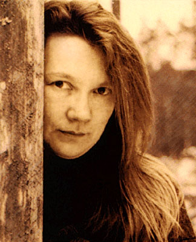

| Взгляд. Настороженный, беззвучный на лице-маске. Только взгляд. Одни глаза. Глаза матери. Глаза праматери. gula-gula это их взгляд, это их голос, это удар в солнечное сплетение, это полет... Это беззащитный взгляд. Взгляд женщины. Не уходи... не ты |
 |